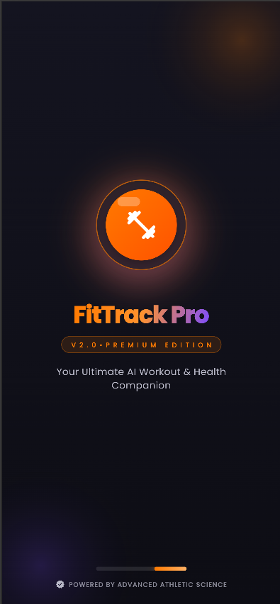
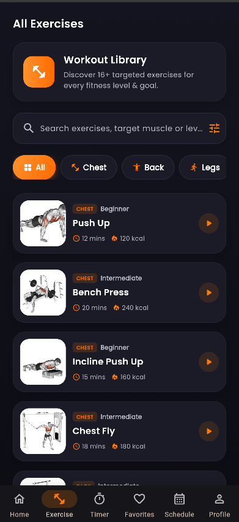
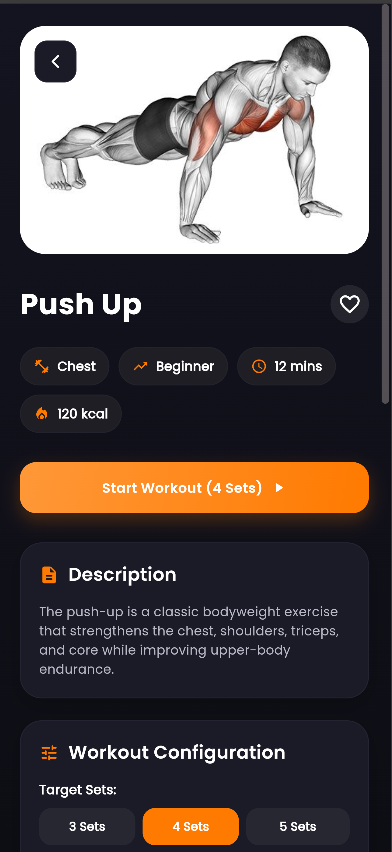
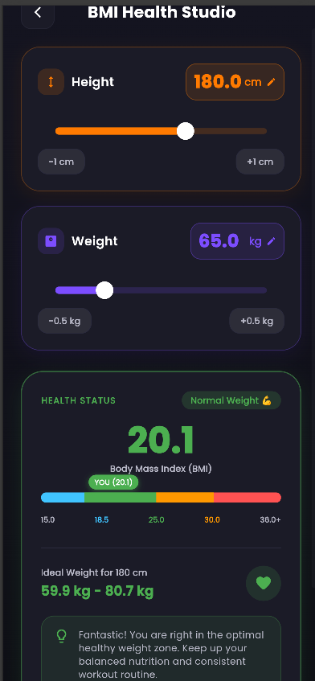
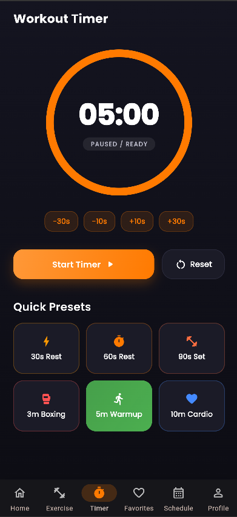
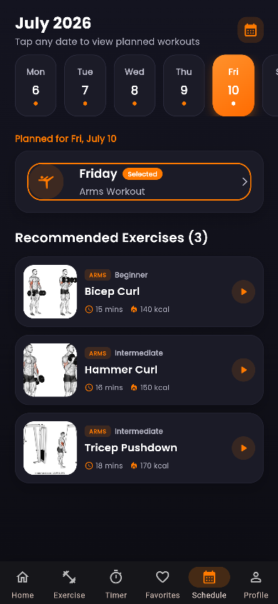
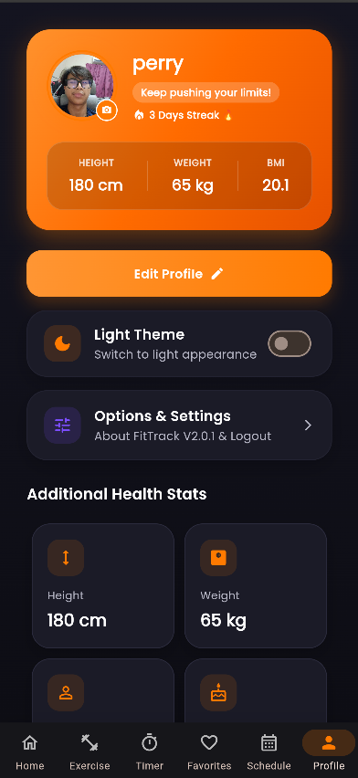

FitTrack V2 – Workout Planner Mobile App
A comprehensive workout planner and fitness tracking application developed with Flutter and Dart, engineered to deliver smooth cross-platform workout planning, interactive timers, BMI calculations, and personalized routine management.
🎯 Project Objective
Developed as an academic mobile computing project at Kolej Profesional MARA Beranang to empower users with an intuitive tool for structuring workouts, tracking fitness metrics, and maintaining consistent exercise routines.
🏋️ Workout Management
Provides categorized exercise directories with step-by-step instructional guides, target muscle breakdown, and difficulty indicators to help users perform exercises safely and effectively.
⚖️ BMI & Fitness Tools
Integrated Body Mass Index (BMI) calculator with dynamic metric inputs and visual status classifications, alongside an interactive workout countdown stopwatch timer for interval sessions.
👤 Personalization & Scheduling
Features dedicated weekly workout calendar scheduling, favorites bookmarking, and personal profile management to track fitness milestones over time.
APPLICATION SCREENSHOTS
FitTrack V2 Mobile Interface

01. Splash Screen

02. Home Dashboard

03. Exercise List

04. Exercise Detail

05. BMI Calculator

06. Workout Timer

07. Workout Schedule

08. User Profile